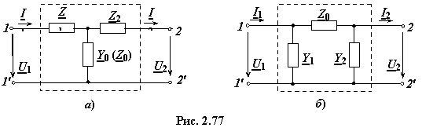
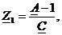
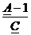
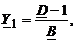
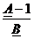

Любой системе уравнений ЧП, содержащей не более четырёх независимых коэффициентов, всегда можно поставить в соответствие идеальную электрическую цепь (соответственно эквивалентную схему замещения ЧП), содержащую не более четырёх элементов, параметры которых могут быть выражены через независимые коэффициенты ЧП.
Т- и П-образные
схемы замещения пассивных ЧП. Широкое распространение на практике получили Т- и П-образные схемы замещения пассивных неавтономных ЧП (рис. 2.77), содержащие по три элемента, и реже Г-образные и мостовые.

Параметры схем замещения ЧП связаны с коэффициентами уравнений А-формы следующими соотношениями:
• для Т-образной схемы замещения (рис. 2.77а):
Y0 = C,  (2.124)
Обратные соотношения:
A = 1 + Z1Y0,
B = Z1 + Z2 + Z1Z2Y0, C = Y0, D = 1 + Z2Y0.
(2.125)
Для симметричного ЧП (А = D): Y0 = C, Z1= Z2 = ;
• для П-образной схемы замещения (рис. 2.77б):
Z0 = B, (2.126)
Обратные соотношения:
A = 1 + Y2Z0, B = Z0, C = Y1+
Y2 + Y1Y2Z0, D = 1+ Y1Z0.
(2.127)
Для симметричного ЧП: Z0 = B, Y1 = Y2 = .